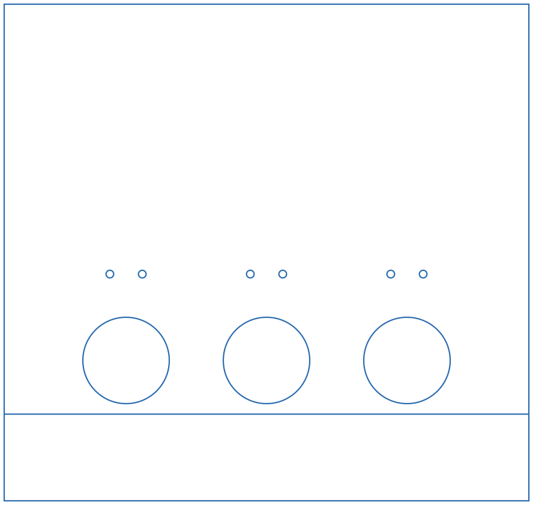
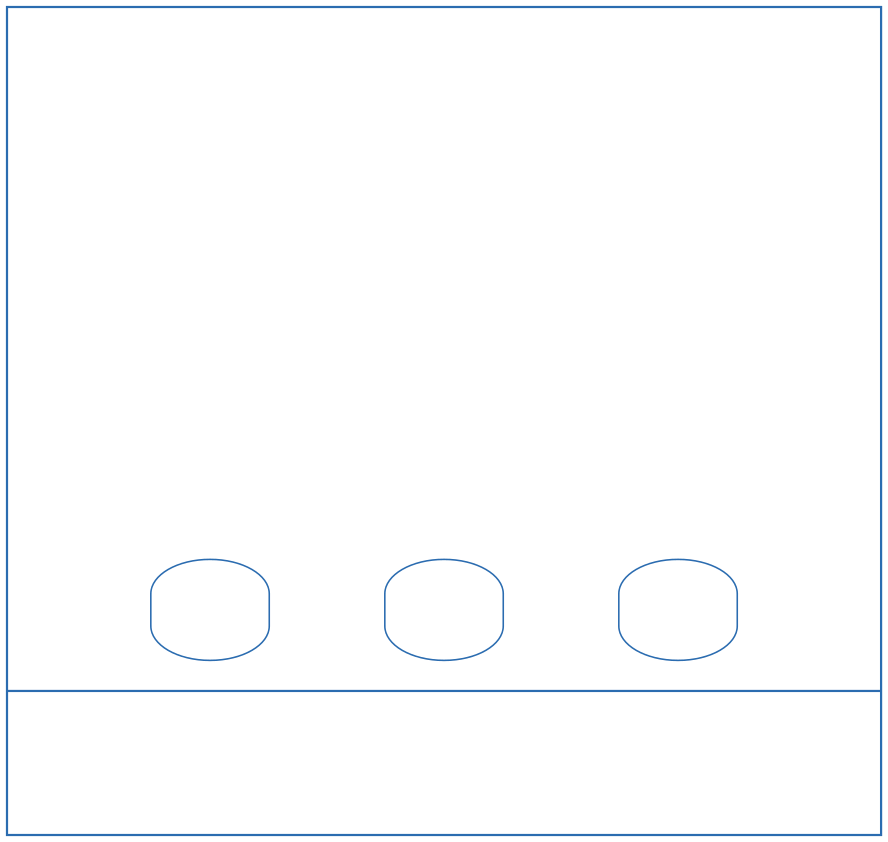
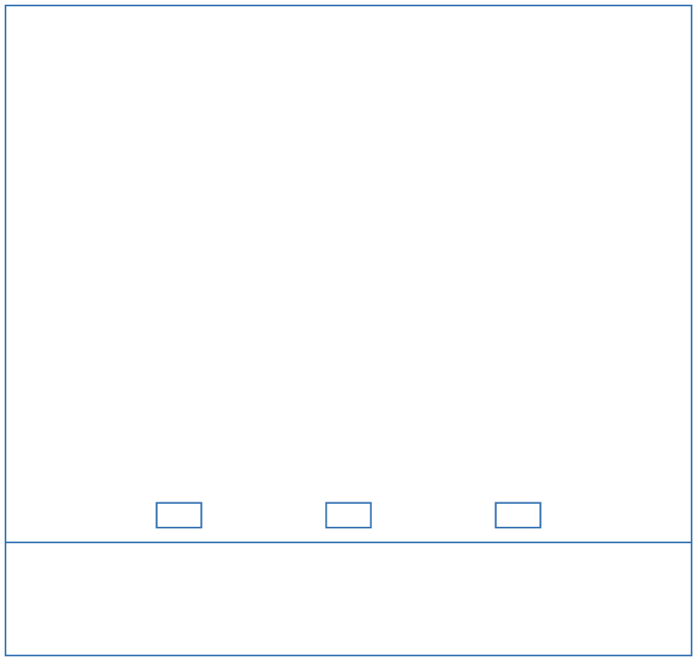
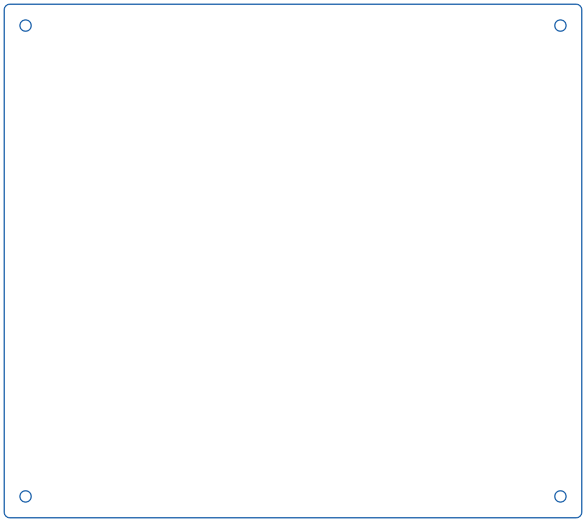
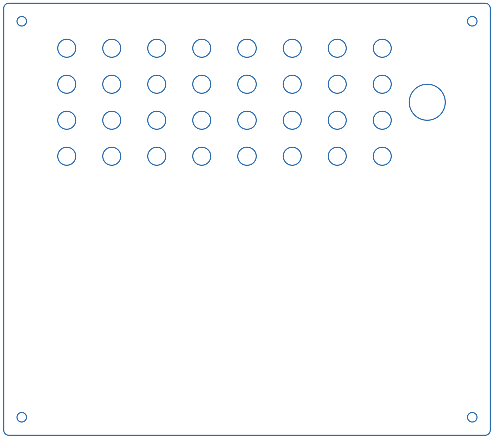

Enclosure (laser-cut parts)¶
Each Ratacademy box is a laser-cut enclosure. It has a port wall holding the nose-pokes, a blank wall opposite it, two side walls, a base and a ventilated lid. This page lists every cut file, what it is, and its measured dimensions.
Download everything
- Vector files for the laser cutter (SVG):
files/laser-cut/svg/. The links in each table below are per-file. - Original AutoCAD drawings (DWG):
ABSBottomMG.dwg·bpodPortsWallMG.dwg·sideWalls.dwg·TopLid2MG.dwg

Cut list for one box¶
| Qty | Part | File to cut | Size (W × H) |
|---|---|---|---|
| 1 | Port wall (nose-poke wall) | FrontBackPortWall_Rat_v5.svg (current) |
12.14 × 11.50 in (308 × 292 mm) |
| 1 | Opposite wall (blank) | FrontBackWall.svg |
12.14 × 11.50 in (308 × 292 mm) |
| 2 | Side walls | SideWall_v2.svg |
10.64 × 11.50 in (270 × 292 mm) |
| 1 | Base | BottomBase.svg |
13.50 × 12.00 in (343 × 305 mm) |
| 1 | Lid | TopLid.svg |
13.50 × 12.00 in (343 × 305 mm) |
| opt. | Port-wall bottom strip | PortWallInsert.svg |
12.14 × 2.00 in (308 × 51 mm) |


Material¶
All parts are cut from 1/4 in (6 mm) acrylic sheet. This matches the 0.25 in deep notch in the side walls. One box takes about 6 ft² (0.55 m²) of sheet before nesting losses. Lay out your parts with that in mind.
Base drawing name
The original base drawing is named ABSBottomMG.dwg. Some earlier builds may
have used ABS for the base. The current standard is acrylic for every part.
Still to confirm: fasteners
How the walls are joined (rods, standoffs, brackets or solvent cement) isn't written down yet. If you've built a box, please add it. See Contributing.
Before you cut: check the scale¶
The SVGs have no physical units. Which file to use depends on how your laser software reads them:
| Files | Units | Use with |
|---|---|---|
*.svg (no suffix) |
72 units per inch | Adobe Illustrator, and most software that treats SVG px as points |
*_96.svg |
96 units per inch | Inkscape, LightBurn and other CSS-px (96 dpi) software |
Only the current port wall (FrontBackPortWall_Rat_v5_96.svg) and the side wall
(SideWall_v2_96.svg) have 96-dpi versions. For other parts, scale by
133.33 % if your software assumes 96 dpi, or set the import DPI to 72.
Always measure after importing
Before cutting, check that the port wall measures 12.14 × 11.50 in (308 × 292 mm) and the base measures 13.50 × 12.00 in (343 × 305 mm). If it's 75 % of that, you imported at the wrong DPI.
All cut lines are blue (#0000FF) hairlines, so they import as a single
vector-cut layer.
Part details¶
All dimensions were measured from the SVG geometry (72 units per inch).
Port wall: FrontBackPortWall_Rat_v5 (current)¶

- Outline: 12.14 × 11.50 in.
- Three 2.00 in (50.8 mm) round nose-poke openings, 3.25 in (82.6 mm) apart center to center. The middle port is centered on the wall. Port centers are 3.24 in above the bottom edge (1.24 in above the split line).
- Above each port there are two 0.177 in (4.5 mm) holes, 0.75 in apart and 2.0 in above the port center. These are clearance holes for #8 / M4 screws, probably for the nose-poke or cue-light mounting.
- One full-width line 2.00 in above the bottom edge splits off a 2 in strip.
PortWallInsert.svgis that same strip as its own file, so you can recut it separately. (What the strip is for, e.g. sitting below a floor insert or giving access to the port wiring, is still to be documented.)
Older port-wall versions (for reference)¶

FrontBackPortWall_v2.svg: three rounded (obround) openings,
1.65 × 1.40 in (42 × 36 mm), on the same 3.25 in spacing. No mounting holes.
FrontBackPortWall.svg: three small 0.79 × 0.44 in (20 × 11 mm)
rectangular openings, 3.0 in apart, centered about 2.5 in above the bottom edge.Opposite wall: FrontBackWall¶
A plain 12.14 × 11.50 in rectangle with no openings.
Side walls: SideWall_v2 (cut 2)¶
- Outline: 10.64 × 11.50 in.
- A 5.00 × 0.25 in (127 × 6.35 mm) notch in the top edge, starting 1.50 in from one side, probably a pass-through for tubing or cables under the lid.
Base: BottomBase¶

- Outline: 13.50 × 12.00 in with slightly rounded corners (r ≈ 0.14 in).
- Four 0.265 in (6.7 mm) corner holes, centered 0.50 in from each edge. They are clearance holes for 1/4 in or M6 hardware. The same pattern is on the lid, so the lid and base can be bolted or rodded together.
Lid: TopLid¶

- Same outline and four corner holes as the base.
- 32 ventilation holes, each 0.50 in (12.7 mm), in a 4 × 8 grid on a 1.25 in pitch.
- One 1.00 in (25.4 mm) hole near one edge (center 11.75 in from the left and 2.75 in from the top), probably for the water line, cables or a camera.
Assembly¶
Help wanted
No step-by-step assembly instructions or photos have been written yet. If you build a box, please add photos and the steps you followed (what goes where, which side of the port wall faces in, how the nose-pokes mount, how the water line is routed). See Contributing.
A typical order, based on the parts above:
- Cut all parts and peel the protective film.
- Mount the nose-pokes (Bpod port interface or your own) into the three openings of the port wall. Use the small holes above each opening for the mounting screws.
- Join the port wall, blank wall and the two side walls into a rectangle.
- Seat the walls on the base and attach the lid using the four corner holes.
- Route the water tubing and cables through the lid hole / side-wall notch to the valves and the Bpod outside the box.
- Wipe down all surfaces before putting an animal in the box (see Weekly maintenance).